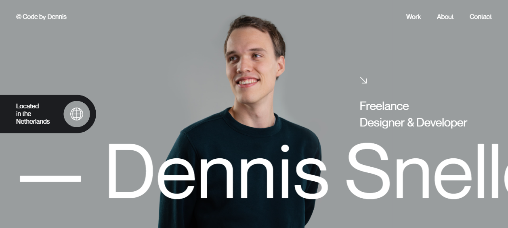

Craft Atlas · 03
Typography
Type is the cheapest way to look expensive. Across 80 teardowns the pattern is brutally consistent: the most memorable sites pick one strong voice, push scale to the extreme, and let size do what most designers waste color and weight on.
1 · The type scale & the extreme-contrast move
The single most repeated finding in the teardowns is not a font choice — it is a scale strategy. The best sites are bimodal: one enormous display tier and one tiny label tier, with almost nothing in between. The gap itself is the hierarchy.
- Dennis Snellenberg ↗ — hero
H1computes to ~189px at a light-ish ~450 weight, while section eyebrows drop to ~12px uppercase tracked labels (NAVIGATION, SOCIALS, LOCAL TIME). Hierarchy is "driven almost entirely by the size jump," not weight or color. - Obys Agency ↗ — the
OBYS®wordmark is set at 200px+ optical, then drops straight to small tightly-tracked captions. A "deliberate dramatic scale jump (hero/caption, almost nothing in between)." - Minh Pham ↗ — house-sized client names against tiny letter-spaced eyebrows ("WHAT THEY SAID", "CONNECT"). One typeface; the contrast does all the work.
- Apple ↗ — a "strong size jump between headline and supporting text creates instant hierarchy with zero ornament." Copy is terse; type does the heavy lifting.
- Basement Studio ↗ — hero
H1~87px tight leading, then capabilities pushed to near-viewport-width statements, with mid-grey eyebrow labels above.
A modular scale gives you that structure for free. Pick a ratio (1.25 "major third" for editorial calm, 1.333+ for drama) and generate steps from a single base. Our shared.css ships a 6-step fluid scale on exactly this principle:
/* A modular scale as custom properties — one source of truth.
Ratio widens from ~1.25 at the small end toward display. */
:root {
--step--1: clamp(0.80rem, 0.76rem + 0.18vw, 0.875rem); /* labels */
--step-0: clamp(1.00rem, 0.95rem + 0.22vw, 1.125rem); /* body */
--step-1: clamp(1.20rem, 1.10rem + 0.50vw, 1.45rem);
--step-2: clamp(1.45rem, 1.25rem + 0.95vw, 2.05rem);
--step-3: clamp(1.80rem, 1.45rem + 1.70vw, 3.05rem);
--step-4: clamp(2.30rem, 1.70rem + 2.90vw, 4.40rem); /* hero h1 */
}
h1 { font-size: var(--step-4); }
.label { font-size: var(--step--1); }Push the contrast ratio, not the number of sizes. Amateur type systems use 7 sizes that all look similar. Elite sites use 2 tiers an octave apart. Make your display tier uncomfortably big and your label tier genuinely small — the drama lives in the gap, and you make fewer decisions.
2 · Fluid type with clamp()
Those giant display sizes can't be fixed pixels — a 189px headline destroys a phone. The modern answer is clamp(MIN, PREFERRED, MAX): type scales smoothly with the viewport between two hard bounds, with zero media queries. Antinomy Studio ↗ drives its 40–80px+ statement headlines exactly this way — the teardown notes "~clamp-driven" statement type as the primary hierarchy signal.
Resize the window →
font-size: clamp(1.5rem, 1rem + 5vw, 4.5rem) · live: —
Read the formula as clamp(floor, slope, ceiling). The middle term mixes a fixed rem base with a vw slope. A bare vw would scale linearly and feel wrong at the extremes; the rem term flattens the curve so small screens stay readable.
/* Anatomy of a fluid step */
h1 {
/* MIN floor base + viewport slope MAX ceiling */
font-size: clamp(2.3rem, 1.7rem + 2.9vw, 4.4rem);
line-height: 1.04; /* tighten as size grows */
letter-spacing: -0.025em; /* optical: big type needs negative */
text-wrap: balance; /* even line lengths on multi-line */
}Accessibility pitfall: a slope built only from vw ignores zoom and the user's root font-size, breaking WCAG 1.4.4 (text must scale to 200%). Always include a rem term in the preferred value (as above) so zoom still works — and never set the MIN below ~1rem for body copy.
3 · One typeface, no pairing
The most common system in the teardowns is the simplest: a single family for everything, with hierarchy coming from scale, weight and case. No pairing means nothing to clash, one font file to optimize, and a coherent voice.
- Linear ↗ — Inter Variable across the entire site, falling back to SF Pro Display. "Single typeface across the whole site — no pairing." A 64px tight-leading heavy
H1does the display work. - Basement Studio ↗ — Geist (Vercel's grotesk) for both headings and body, "so hierarchy comes from scale/weight, not family pairing."
- Brittany Chiang ↗ — Inter for everything, credited in the footer, loaded via
next/font. Clear three-tier hierarchy: display name / section labels / body, all one family. - Dennis Snellenberg ↗ — a single custom "Dennis Sans" neo-grotesque "doing all the work."
- Minh Pham ↗ — "disciplined single-typeface system" (ITC Avant Garde Gothic): hierarchy "driven almost entirely by size + weight + spacing, not by color or many type families."
Inter is the default for a reason. Multiple teardowns (Linear, Brittany Chiang) reach for Inter; others reach for a Geist-style grotesk. It's a variable font with excellent hinting, tabular figures, and a huge weight range — one file covers labels through display. If you're unsure, start here and spend your creativity on scale and spacing instead.
4 · When you do pair: display × text
If you pair, make the two voices maximally different so the contrast reads as intentional, not accidental. The teardowns show the classic pairing is a loud display face over a quiet, readable text face.

WICKED) so the giant type wraps gracefully at any width.This document itself uses the same strategy via shared.css: Newsreader (serif) for headings and the lede, Inter (sans) for body and labels, JetBrains Mono for code and eyebrows. Three families, three jobs.
- Nothing ↗ — an unusual but deliberate pairing: a dot-matrix / LED-segment display cut (NType82) for labels and wordmark, over a serif for card headlines ("Five days of back-to-back tracks") — giving an editorial, almost-print feel against the technical labels.
- Gucci ↗ — a two-axis system: a classical Granjon-style serif for the masthead lineage paired with a clean "Gucci Sans" for UI and body.
- Josh Comeau ↗ — body in a humanist sans (Wotfard) but code blocks in Cartograph CF, a "whimsical" mono — pairing a reading face with a distinct code face that matches the playful tone.
- Stripe Press ↗ — a single high-contrast literary serif (Ivar Headline for titles, Ivar Text for body) — "it reads like a book, reinforcing the editorial identity."
/* The three-role system used by this very page */
:root {
--font-serif: 'Newsreader', Georgia, serif; /* display + lede */
--font-sans: 'Inter', system-ui, sans-serif; /* body + labels */
--font-mono: 'JetBrains Mono', ui-monospace, monospace;/* code / eyebrow */
}
h1, h2, h3 { font-family: var(--font-serif); }
body, p { font-family: var(--font-sans); }
.kicker, code, pre { font-family: var(--font-mono); }Pair by contrast of category, not by "matching." Serif display + sans body, or sans display + serif body — opposite categories read as a designed decision. Two sans-serifs that look almost the same just look like a mistake. The mikemai.net move (brutalist condensed sans over a centuries-old serif) is extreme on purpose.
5 · Variable fonts & loading
A variable font ships every weight (and often width / optical-size) in one file with a continuous axis. That's why Linear and Brittany Chiang both use Inter Variable: a single download covers labels at 400 through display at 800, instead of loading five static cuts.
/* Load a variable font with the full weight range, swap to avoid FOIT */
@font-face {
font-family: 'Inter var';
src: url('/fonts/Inter.var.woff2') format('woff2-variations');
font-weight: 100 900; /* declare the axis range */
font-display: swap; /* show fallback now, swap when ready */
}
h1 { font-family: 'Inter var'; font-weight: 760; }
/* Fine-grained axes when you need them */
.optical-display { font-variation-settings: 'opsz' 32, 'wght' 600; }Loading discipline matters as much as the file. Josh Comeau ↗ ships a self-hosted Wotfard-fallback "to avoid layout shift" (CLS) — a fallback metric-matched to the real face so text doesn't reflow on swap. In React/Next, Brittany Chiang ↗ and Linear ↗ load Inter via next/font, which self-hosts the file, inlines the @font-face, and auto-generates a size-adjusted fallback:
// Next.js — next/font self-hosts + zero layout shift
import { Inter } from 'next/font/google';
const inter = Inter({
subsets: ['latin'],
display: 'swap',
variable: '--font-inter', // expose as a CSS custom property
});
// <html className={inter.variable}> … then use var(--font-inter)Web-font pitfalls: (1) font-display: swap without a metric-matched fallback causes a visible reflow (CLS) — pair it with size-adjust/ascent-override or let next/font do it. (2) Subset to the glyphs you use; a full CJK face like Bottega Veneta ↗'s Source Han Sans is multi-megabyte. (3) preconnect to the font host (we do, in <head>) to shave the handshake.
6 · Measure, leading & rhythm
Display type gets the glory, but body copy is where readability is won or lost. Two numbers govern it: measure (line length, ideally 45–75 characters) and leading (line-height). Obys Agency ↗ sets its blurb left-aligned, ragged-right, with "generous leading" — pure Swiss/International Typographic Style. Gucci ↗ keeps body "small, generously leaded, low-contrast — reinforcing the magazine feel."
Too wide · line-height 1.3
Without a max-width the line runs the full container, and the eye loses its place returning to the start of each line. Tight leading makes the wall of text feel dense and airless, and long-form reading becomes a chore the moment a paragraph gets going.
62ch · line-height 1.7
Capped at a comfortable measure, the eye finds the next line easily and reading rhythm holds. Open leading gives each line room to breathe, which is exactly why long-form sites set body copy at a controlled width with generous line-height.
ch unit ties measure to the font's own character width, so the constraint survives a font change./* The reading-comfort defaults this page uses */
.prose {
max-width: 65ch; /* measure: ~45–75 chars per line */
line-height: 1.7; /* leading: 1.5–1.8 for body */
text-wrap: pretty; /* avoids orphans / ragged last lines */
}
h1, h2 {
line-height: 1.12; /* big type wants tighter leading */
text-wrap: balance; /* even line lengths in headlines */
}
/* Vertical rhythm: space siblings consistently, not ad-hoc */
.flow > * + * { margin-top: 1.5rem; }Josh Comeau ↗'s body is explicitly "comfortable, high-line-height, long-form-reading optimized" — the inverse of the giant display tier. The lesson: tighten leading as type grows, loosen it as type shrinks.
7 · Hierarchy without a second font
Single-typeface sites still need emphasis. The teardowns reveal a clever, font-free trick: two-tone hierarchy — render part of a heading bright and part dimmed, within the same element, same font.
A new species of product tool. It brings issues, projects, and roadmaps into one system.
--ink), continuation dimmed (--ink-faint). Emphasis with no second font and no second hue.- Linear ↗ — "renders the first sentence in bright white and the continuation in muted gray within the same heading… creates emphasis without a second font or color hue."
- 14islands ↗ — a statement block ("Lovable Products — from vision to launch") uses "a duotone two-weight treatment: half the words light grey, half near-black, as emphasis within one phrase."
- Minh Pham ↗ — testimonials use a two-tone pull-quote (active line cream, upcoming line ghosted grey) to telegraph a typewriter reveal.
<h2 class="thesis">
<span class="lit">A new species of product tool.</span>
<span class="dim">It brings issues, projects, and roadmaps into one.</span>
</h2>
.thesis .lit { color: var(--ink); } /* bright thesis */
.thesis .dim { color: var(--ink-faint); } /* dimmed remainder */The other font-free lever is case + tracking for labels. Nearly every teardown sets eyebrows/labels in small ALL-CAPS with positive letter-spacing — Dennis Snellenberg ↗, Brittany Chiang ↗, Bottega Veneta ↗ (whose "wide, evenly-tracked capitals" are its single strongest signature). It instantly reads as "metadata" and never competes with the display tier.
Letter-spacing rules of thumb: tighten (negative tracking, e.g. -0.02em) as type gets bigger — large type looks loose by default. Widen (positive, 0.08–0.18em) for small UPPERCASE labels — caps look cramped by default. Never letter-space lowercase body text.
8 · Expressive & bespoke display type
At the top end, brands commission their own typeface so the type itself is the brand. This is the move that separates a template from an identity.

H1. A bespoke single family plus extreme scale is the entire identity; the duplicated stacked headings are an animation rig for a marquee/parallax reveal.- Teenage Engineering ↗ — one custom face, te-20 (a tight monospaced-leaning grotesque matching the silkscreen on their hardware), plus a family of house cuts and per-product display faces (
riddim,franxurter,swingus) so each product spotlight carries its own typographic voice while te-20 keeps the system coherent. - Nothing ↗ — bespoke NType82 with a dot-matrix / LED-segment display cut. Signature treatment: parenthetical naming with letter-spaced parens —
phone ( 3 ),ear ( 3 ). - Obys Agency ↗ — in-house OTF Obys NG, treated as a "living system" defining rhythm / spacing / hierarchy, working as both display and text.
- Stripe Press ↗ — the literary Ivar family is so central the typography "defers to the 3D objects rather than shouting," and spine text becomes part of the rendered 3D book texture.
- Apple ↗ — SF Pro (their own system face): "big, tight, bold headlines" with a strong size jump and almost no paragraphs.
Expressive type also leans on OpenType features a stock setup ignores: ligatures, tabular figures for numbers in tables, fractions, and stylistic sets. Turn them on deliberately:
/* Production-grade OpenType defaults */
body { font-feature-settings: 'kern', 'liga', 'calt'; } /* this page's base */
.data-table td { font-variant-numeric: tabular-nums; } /* aligned columns */
.price { font-variant-numeric: tabular-nums lining-nums; }
.brand-display { font-feature-settings: 'ss01' 1, 'dlig' 1; } /* stylistic set */Overuse / a11y caution. Teenage Engineering ships no semantic <h1> — hierarchy is "purely scale, weight, position, photography" (an explicit accessibility trade-off the teardown flags). Expressive type is no excuse to drop semantic headings: keep a real <h1>–<h3> outline for screen readers and SEO, then style it however bold you like. Per-product display faces (TE's riddim et al.) also multiply font payload — budget it.
The whole atlas in one rule: pick one strong voice, set the display tier uncomfortably large with tight tracking, set labels small and tracked-out, cap your measure at ~65ch, and let the scale contrast carry the hierarchy. Bespoke fonts are a bonus — the discipline is free.